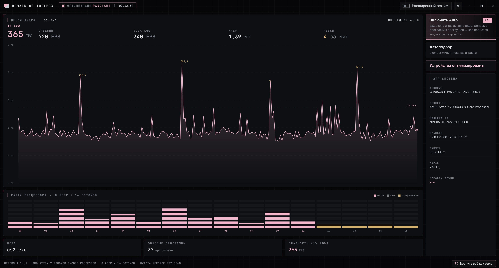
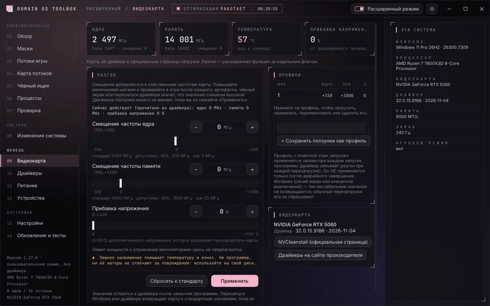

▍ Domain OS Toolbox 1.16.1
Игра получает лучшие ядра
Toolbox — программа для игр, которую ставит Domain OS. Включаете Auto, запускаете игру, и программа сама отдаёт игре лучшие ядра процессора и приглушает всё лишнее в фоне. Закрыли игру — всё вернулось как было.

Что нового в Toolbox 1.16.1
Главное — коротко, полный список под кнопкой. Изменения Windows в плейбуке 2.3.1 — на главной странице.
- Датчик ожиданий: Top-5 учитывает, как долго потоки игры ждут ядро
- Маска ядер одной кнопкой; на одном кэше без E-ядер игре все ядра
- Ядра драйвера и прерываний держатся 60 с, без скачков
- Чёрный ящик: каждый рывок простыми словами
Все изменения (6)
- Датчик ожиданий (настройки, включён): Dynamic Top-5 выбирает потоки игры по загрузке и по тому, как долго они ждут ядро, и переставляет поток только по понятной причине: ядро заняли другие программы, драйверы или поток сам всё время ждёт.
- Маска ядер: процессоры с одним кэшем и без E-ядер (например, Ryzen 7 7800X3D) отдают игре все ядра. На 7800X3D владельца с маской самое долгое ожидание ядра главным потоком игры в CS2 DM было 878 мкс (M10), без маски 238 мкс (M11). Кнопка «Маска ядер» переключает её одним нажатием, рядом короткая инструкция, как её проверить.
- Ядра драйвера видеокарты и прерываний держатся 60 с, поэтому потоки игры больше не переставляются каждые несколько секунд.
- Чёрный ящик (переключатель в настройках): каждый рывок игры объясняется простыми словами (игра или видеокарта, драйвер, другая программа, не хватило ядер) с советом. Только читает.
- Защита от всплесков удерживает память игры, только когда игра действительно читает свои страницы обратно с диска, и снимает удержание через 10 с, если не помогло.
- Замер на Ryzen 7 7800X3D + RTX 5060 владельца (CS2 DM, 3 прогона по 30 с, M13): 1% low 429, 0.1% low 230 (перцентиль, см. таблицу замеров), самое долгое ожидание ядра главным потоком игры 181 мкс, ни одного ожидания дольше 0.5 мс. Будем рады замерам с других ПК.
Чего ждать
Честно, чтобы не было лишних ожиданий.
Средний FPS обычно почти не меняется. Программа помогает с плавностью: меньше просадок и рывков. В цифрах это 1% low.
Помогает не на каждом ПК. Если всё упирается в видеокарту, разницы может не быть. Это нормально. На ноутбуках программа пока не проверена.
Работает не со всеми играми. Игры под античитом уровня ядра (Vanguard — Valorant; EasyAntiCheat — например Fortnite, Apex Legends, Rust; BattlEye — например Rainbow Six Siege, PUBG и другие) Toolbox не открывает вовсе. Пока работает клиент античита, который защищает игру (например FACEIT с CS2), саму игру он тоже не трогает. В этих случаях действует только фон: программы на заднем плане приглушаются, а игре ядра не раздаются, поэтому эффект меньше. В играх, где потоки без имён, программа распознаёт их приблизительно.
Как пользоваться
Четыре шага. Всё остальное программа делает сама. Ярлык Domain OS Toolbox лежит на рабочем столе, программа запускается вместе с Windows.
- Нажмите «Включить Auto». Программа сама найдёт игру, отдаст ей лучшие ядра и приглушит фоновые программы. Когда игра закроется, всё вернётся.
- Нажмите «Автоподбор» и играйте как обычно, минут восемь. Программа сравнивает настройки по времени кадра.
- Нажмите «Применить», когда автоподбор закончит. Без этой кнопки новые значения не включаются.
- Один раз нажмите «Оптимизация устройств», когда игра закрыта, и перезагрузите компьютер. Ссылка «Вернуть как было» отменяет это.
Каждое важное устройство получает своё ядро: USB-контроллер с мышью, видеокарта, сетевая карта. На процессорах с 6 ядрами и меньше ядра под устройства не выделяются: игра получает все ядра. Диски не трогаются, MSI включается только там, где устройство его поддерживает, ноутбуки не трогаются. Если Windows после изменений не загрузилась или упала, всё откатывается само. Кнопка показывает состояние: «нужна перезагрузка» или «действует». На странице «Устройства» то же делает кнопка «Применить раскладку»: перед записью она показывает, какое устройство получит какое ядро.
Что делает программа
Пока вы играете. Без вашего участия.
Лучшие ядра для игры
Самые важные части игры работают на самых быстрых ядрах процессора и не мешают друг другу.
Тише в фоне
Браузер и другие фоновые программы на время игры получают меньше ресурсов и низкий приоритет диска — игра первой читает с диска. OBS, Discord, программы звука и VR, лаунчеры игр не трогаются.
Ядра без лишней работы
Мышь, видеокарта и сеть тоже нагружают процессор. Программа замечает занятые ими ядра и уводит игру на свободные.
Автоподбор
Пробует разные настройки, пока вы играете, сравнивает плавность и предлагает лучший вариант. Без вашего «Применить» ничего не меняется.
Защита от фоновых всплесков
Если фоновая программа во время игры долго грузит процессор, она уступает игре, но никогда не останавливается. При нехватке памяти игра удерживает свою. Службы, лаунчеры, звук, голос, стриминг, VR, защита и античиты не трогаются. Включена по умолчанию, на чистом ПК ничего не делает.
Тихие таймеры
Некоторые фоновые программы, например подсветка и мониторинг, будят процессор тысячи раз в секунду. На время игры программа это успокаивает.
Всё возвращается
Перед любым изменением программа запоминает, как было, и возвращает всё, когда игра закрывается. Даже после сбоя.
Разгон видеокарты (NVIDIA и AMD Radeon)
Расширенная функция, ею пользуются на свой риск. С версии 1.16.0 страница открыта по умолчанию, но ничего не записывается, пока вы не примените профиль и не подтвердите.
- Включите «Расширенный режим» вверху справа.
- Откройте страницу «Видеокарта»: ползунки частот и напряжения, профили, «Применять при запуске», «Сбросить к стандарту».
- Примените профиль. Перед записью Toolbox спрашивает подтверждение.
Защита от сбоев: если после разгона был синий экран или внезапное выключение, профиль при следующем запуске не применяется. Обычная перезагрузка разгон не сбрасывает.
Неверные значения делают карту нестабильной, а лишнее напряжение сокращает её срок службы.

Для опытных
Переключатель «Расширенный режим» вверху справа.
Там всё остальное: карта процессора, маски ядер, потоки и процессы, прерывания устройств, питание и видеокарта. Обычному пользователю этот режим не нужен.
В Toolbox нет переключателей, которые отключают защиту Windows. Поэтому игры с античитом работают как обычно.
Безопасность
Программа работает как обычное приложение.
Без драйверов
Только стандартные возможности Windows, никаких своих драйверов.
Не лезет в игру
Ничего не встраивает в игру и не трогает её память.
Открытый код
Исходники DomainScheduler, главной части программы, лежат на GitHub.
Скачать
Если вы ставите плейбук Domain OS, качать отдельно не нужно: он поставит Toolbox сам и добавит ярлык на рабочий стол.
- файл
- DomainOS-Toolbox-1.16.1.exe · 71,2 МБ
- sha-256
- 753104594a458d48764776fdb2f32f65e0f7e624d597c44718e98ccb000495f6
- проверка
- Get-FileHash .\DomainOS-Toolbox-1.16.1.exe
- система
- Windows 10 и 11, 64-бит
- установка
- не нужна, запуск от администратора
gh attestation verify DomainOS-Toolbox-1.16.1.exe -R 6kane1/DomainOS